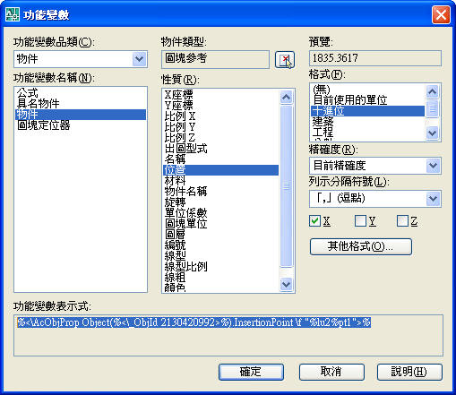

此教學主題參考論壇會員所提出的討論主題:
[已解決]有沒有可以顯示XY座標的功能變數？
https://www.autocad-tw.com/t2753-topic
說明：作法因人而異...我的方式並非標準作法，各位朋友可以多多測試找到適合自己的方式喔!!
可以先製作好屬性圖塊，然後在屬性欄位中插入以下的功能變數，X座標及Y座標須分開插入!!

補充進階作法： 工具選項板運用
建議可以將圖塊作分類整理，可以新增資料夾來方便管理，日後即可透過工具選項板來快速提高工作效率!!
***當您越了解CAD的功能，你便可以透過技巧運用來提昇您日常的工作效率，這就是AutoCAD的魅力所在，AutoCAD的無限可能有待大家一起探討呢!!